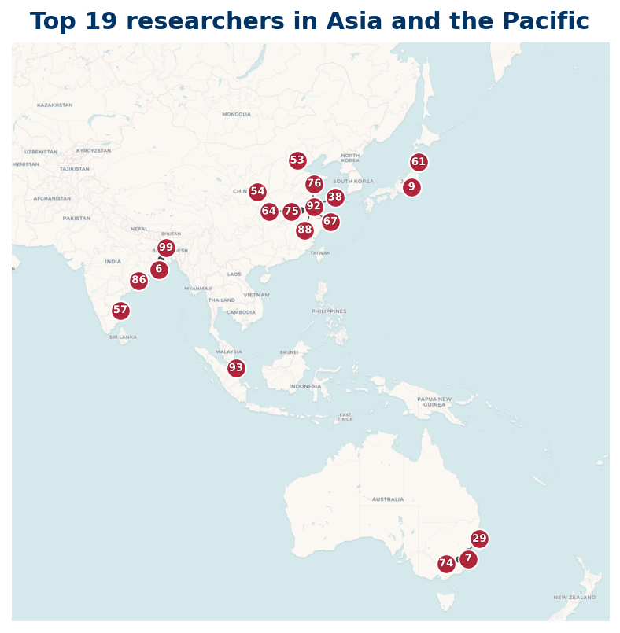

21 researchers are based in Asia and the Pacific; 19 researchers mapped, 2 researchers location not available (institution geocode pending).
Listing
| Rank | Name | Institution | Country |
|---|---|---|---|
| 3 | Apoloniusz Tyszka | Hue University | VN |
| 6 | Min Sha | South China Normal University | CN |
| 10 | Igor E. Shparlinski | UNSW Sydney | AU |
| 11 | Stephan Baier | Ramakrishna Mission Vivekananda Educational and Research Institute | IN |
| 15 | Yingchun Cai | Tongji University | CN |
| 36 | Chaohua Jia | Academy of Mathematics and Systems Science, Chinese Academy of Sciences | CN |
| 45 | Liangyi Zhao | UNSW Sydney | AU |
| 55 | Guangshi Lu | Shandong University | CN |
| 58 | Hongze Li | Shanghai Jiao Tong University | CN |
| 61 | Hao Pan | Nanjing University of Finance and Economics | CN |
| 64 | Jiahai Kan | Nanjing University of Posts and Telecommunications | CN |
| 67 | Jianya Liu | Shandong University | CN |
| 75 | Jinjiang Li | China University of Mining and Technology (Beijing) | CN |
| 76 | Min Zhang | Beijing Information Science and Technology University | CN |
| 79 | Pan, Chengdong | Shandong University | CN |
| 84 | Wenguang Zhai | China University of Mining and Technology (Beijing) | CN |
| 85 | Ping Xi | Xi'an Jiaotong University | CN |
| 91 | Minggao Lu | Shanghai University | CN |
| 95 | Akshaa Vatwani | Indian Institute of Technology Gandhinagar | IN |
| 96 | Jyothsnaa Sivaraman | Chennai Mathematical Institute | IN |
| 99 | Xianmeng Meng | Shandong University of Finance and Economics | CN |